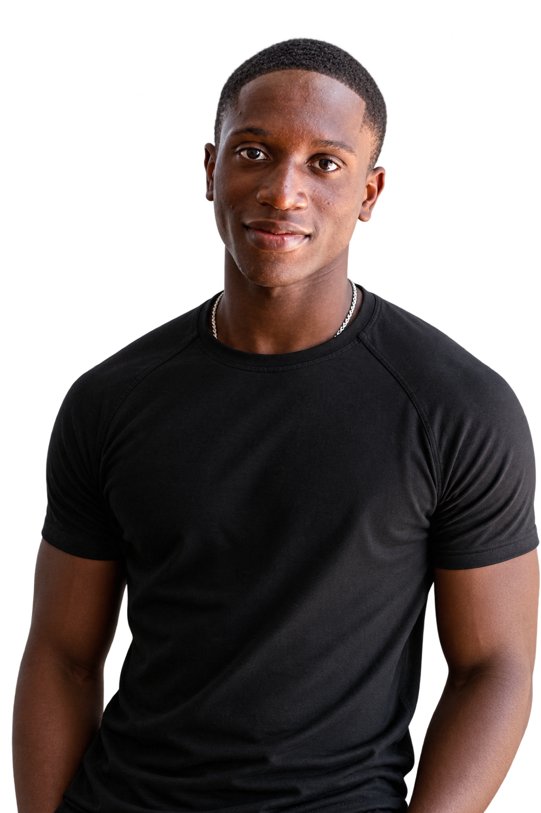

Hello, it’s me
Owen
Scott.
I’m a student and creator interested in the places where business, technology, and creativity meet.
Scroll for more
.jpeg) FOUND MATERIALS / NEW MEANING
FOUND MATERIALS / NEW MEANINGThe short version
Always learning.
Always making.
I’m exploring AI, digital marketing, and art while building projects and learning along the way. I’m drawn to visual work that communicates clearly, feels considered, and gives people something to remember.
This site is my portfolio and an evolving record of what I’m working on, what I’m learning, and where I’m headed next.
See what I’ve been making ↗Ideas with a point of view ✳ Thoughtful design ✳ Learning by making